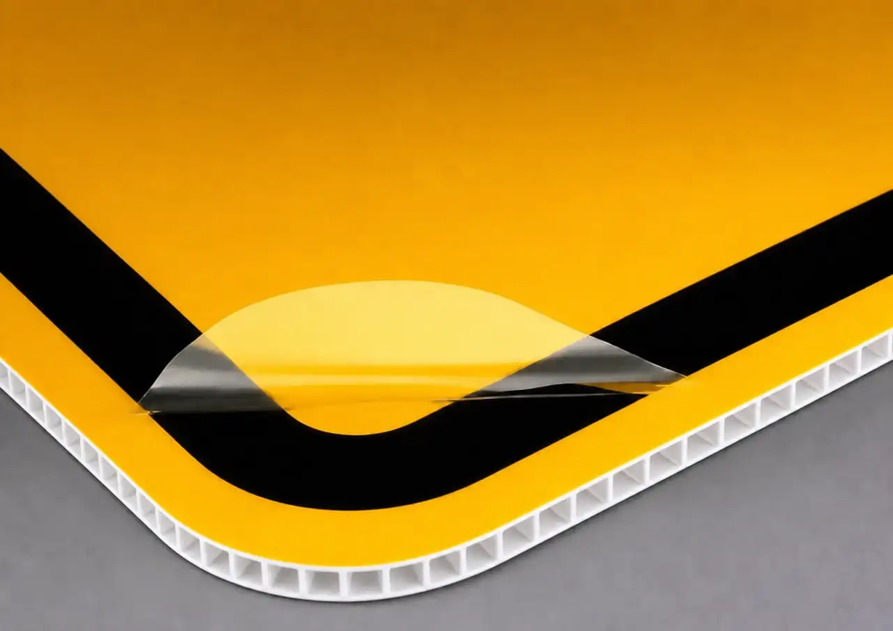

Will the sign read quickly and confidently in its roadside context?
The decision
The right material makes every sign easier to see, simpler to manage, and more valuable over time.
Choose the material based on the job each sign needs to do—not just its initial cost.
Can the panel support seasonal removal, storage, and reinstallation?
How much rigidity and resilience does the site require?
Does the investment match the visual standard and service expectation?
Interactive material guide
Explore the material options.


10 mm Coroplast edge detail
Option 01 — Coroplast
Lightweight. Efficient. Built for seasonal flexibility.
A practical, lightweight substrate for cost-conscious seasonal applications.
At-a-glance selection
One program. Three definitions of value.
10 mm Coroplast
Seasonal utility
For straightforward, short-duration applications where lightweight handling and value lead the decision.
3 mm ACP
Balanced, repeat-use value
For a polished, rigid, reflective seasonal system that balances appearance, durability, and lifecycle value.
0.080 in Aluminum
Highest-resilience option
For more exposed, more permanent, or higher-priority locations where maximum rigidity is the priority.
Recommended direction
Specify 3 mm ACP with a reflective face as Delta’s program standard—then use aluminum selectively where exposure justifies the upgrade.
01Confirm material direction and approved project pricing.
02Finalize artwork and reflective-face requirements.
03Confirm locations, mounting, and site conditions.
04Plan production, installation, removal, and seasonal
storage.